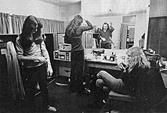
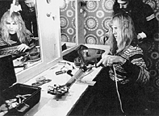
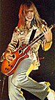
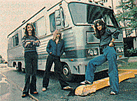
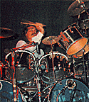
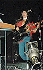

When three thousand ticketholders come to see Rush here at the Capitol Theatre tonight, they will see guitarist Alex Lifeson, bass guitarist Geddy Lee, and drummer Neil Peart perform a two-hour concert that starts precisely at 9:30 p.m.
What those ticketholders won't see is the show already underway in the afternoon. The performers are 22 members of the Rush road crew, a young, aggressive and technically accomplished entourage responsible for setting the stage that Rush will take in nine and a half hours.
So far, the road show has been a slow one. A snowstorm delayed the arrival-by-bus of five band roadies and the four-strong National Sound crew hired for the tour. The four light men from See Factory also hired for the tour are here, but they can't do more than sip coffee at their leisure because of one 4'x4' piece of wood that won't budge.
"You see that beam over there?" Rush stage manager Michael Hirsh takes a minute out from directing men and machines to point to a black wooden beam supporting a balcony with light and curtain controls at the rear corner of the Capitol stage. "That lousy beam means we can't erect our lighting tress. It would move the tress four feet off center, four feet we don't have on this stage."
Hirsh's imposing height and deep voice have earned him the nickname "Lurch." He explains that the Capitol's small stage elimites the rear-projection film rig designed for the "Cygnus X-1" segment of the show. Nor can the stage accommodate even half of the band's sound system. Of the 15 tons of equipment Rush carries from city to city, seven of them will stay in the trucks tonight.
Lurch is not happy with the situation, and not just because of the inconvenience. Elsewhere in the States, the Canadian power trio can play stadium stages to SRO crowds. But album sales are lagging on the East Coast, forcing the band into smaller theatres for economy's sake. To Lurch, crew, and band, that's a matter of pride.
"In the Midwest," Lurch complains to a Capitol stagehand, "we're a coliseum act. In the West and the South, we're a coliseum act. But in the Northeast, we're shit."
By 2 p.m., the rest of the Rush contingent has arrived and the show begins in earnest.

This kind of life looks like fun? This is only one of over 100
such dreary dressing rooms Rush will see this year.
On the liner notes of the Rush double live album, All The World's A
Stage, the road crew is actually credited as "The Show" and to see
them unload, set-up, check, double-check, and triple-check the equipment --
instruments, amplifiers, lights, monitors, p.a., special effects -- in time
for a 3:30 band soundcheck is to understand why. Directed by Lurch and
crew-coordinator Ian Grandy (a ten-year vet of the Rush road wars), the crew
and a dozen Capitol stage hands perform a flawlessly choreographed ballet of
physical labor and technical agility. Each roadie assumes his position and
goes to work with such facility and rehearsed precision that they could
probably do the job blindfolded.
"It's like a factory job," according to Larry Allen, the center stage technician responsible for Neil Peart's drum kit. "You have a certain schedule you adhere to so that everything's ready on time and a certain procedure of working so it gets done right. But instead of being nine-to-five, it's more like ten-to-two in the morning."
That schedule and procedure becomes so ingrained in the roadie subconscious that drums are set up, walls of amplifiers erected, guitars tuned, flashpots tested, house and stage monitor speakers placed, and mike levels set within 90 minutes, as though the day's hassles were a figment of Lurch's imagination. And after the show, the crew will dismantle their afternoon's work in 28 minutes. "That," blond Detroiter Skip Gildersleeve, Geddy's guitar roadie, will exclaim proudly, "it a crew record."
Jaunary 18, 1:30 a.m.
Braving sub-freezing temperatures and the gentle prodding of security guards, Rush fans crown the Capitol backstage exit in hopes of shaking a hand and snaring an autograph. The show they'd just seen was a remarkable display of heavy-metal chops -- Lifeson strengthening his position as Canada's convincing answer to Jimmy Page, Lee relating Peart's phantasmagorical tales of other-worldly war over a stormy swirl of complex bass and drum patterns.

Guitar roadie Tony Geranios gives Alex a hand repairing a
malfunctioning axe.
There are 22 members in the Rush crew.
But the fans stand disappointed. Rush left the hall over an hour ago by a side
door and the only eroes coming out this one are crew members. No hands are
shook and no autographs asked.
On the crew bus, the roadies down a few beers, share a communal smoke, and divide their attention between a backgammon game and M*A*S*H episodes blaring away on the bus Betamax. No wild parties, no orgies, no heavily-panting females. The 500-mile ride to Pittsburgh -- next stop on the Rush 1978-79 Tour of the Hemispheres -- is marked by quiet conversation, a few good laughs, and a lot of yawning. (Later in Pittsburgh, two girls board the bus yelling "Party!" in hopes of finding one, only to have the crew indignantly chase them off.)
Road life, in fact, is no way to see the world. The underbelly of rock & roll glamour, touring is an endless chain of cities and gigs, broken only by the occasional day off. To roadies, it's all in a gig's work. So why a writer would want to go along for this ride is inconceivable to them. "Just what the hell do you intend to learn hanging out with us?"
The first thing I learn is how one actually becomes a roadie. Forget the want ads, employment agencies, and resumes. As with everything else in the music business, it's what you know, then who you know.
Take Greg Connolly, a bearded native of Nova Scotia now living in Toronto, who mixes the band's stage monitors. "I was working in this sound store in Toronto when Geddy comes in and says to me 'I hear you mix monitors real well. We're having some troubles with ours.' They haven't had any trouble since. But I'd never even seen the band before that."
Sam Charters is the band valet or "shreve" (meaning ambiguous, undefined). Such is his job -- doing what needs to be done at any given moment. A former journalist and editor for the Canadian rock periodical Stage Life, he shagged balls at a Toronto golf course to bide time as he recuperated from injuries sustained in an auto mishap.
"I knew the band from the times I saw them play York College in Toronto when they were driving an Econoline and unloading the equipment themselves. Somehow they heard what I was doing and Howie (road manager Howard Ungerleider) asked if I'd like a gig with the band, although at the time they weren't too clear on what it would be." But regardless of their individual backgrounds, duties, and salaries (a Rush average of $300 a week depending on the job), the Rush roadies work as one and are well-known for their proficiency.
"Promoters say our crew is one of the most professional around," Geddy Lee says later with pride. "But they are also very demanding. If our crew is going to do the job right, they feel they deserve everything that's coming to them. If there is no milk at the crew breakfast, or there aren't as many stagehands as stipulated in the contract rider, they'll complain about it. Because complaining is the only way they have to let out their frustrations on the road."
Finally, everyone on the crew but turns in for the night, but not without one of those complaints.
"Shit," barks one roadie as he peers into the bus refrigerator. "We just ran out of beer."
PITTSBURGH, PA.
January 18, 7:00 p.m.
Today is an off-day. But the fact that Pittsburgh has nothing to offer either crew or band in day or nightlife doesn't bother them. The roadies spend the day catching up on lost sleep and daytime TV at the Pittsburgh Hilton. Only Skip Gildersleeve and projectionist Harry Dilman go out on "torch club," a crew euphemism for bar-hopping. Geddy Lee, a cinema junkie, takes in three movies in succession -- "Superman", Ingmar Bergman's "Autumn Sonata", and "Invasion of the Body Snatchers".
Two of the three tour bus drivers, Mark Gilpin and Tom Whitaker, take in the sights at a recreational vehicle show at the Civic Arena, where Rush will play tomorrow night. Foremost in their minds, however, is the safety of their buses, parked in a lot a short cab ride form the hotel. Both have been burned more than once by quick-fingered kids who raid the tour buses in search of booze and other booty.

One highlight of the new Rush stage show is Alex's expert axe-handling on the
instrumental "La Villa Strangiato."
Mark -- whose eight years in the business include an early road managing stint with Diana Ross and the Supremes -- remembers with a cynical laugh "one kid who raided the bus and took my clip-on tour pass with my picture on it. So I stood at the box office for the show that night when the doors opened and, sure enough, the kid who stole it was stupid enough to ear it to the gig and try to get in free on it -- with me standing there laying in wait for him."
No such thievery marks this layover. But the drivers check their rigs anyway, only to find freezing rain and near-zero temperatures have caused the bus brakes to freeze. As a result, crew members will go to work at the Civic Arena tomorrow morning by cab.
January 19, 7:30 p.m.
Alex Lifeson careens down the backstage hallway. Wide eyes and a beaming smile accenting his blond angelic good looks, he takes a hairpin turn on his rollerskates, asking surprised onlookers, "Hey, do I look like Linda Ronstadt?"
"No!" answers a roadie chorus as Neil Peart and Geddy Lee cruise by on their skates. Together with the crew, which looks bemusedly on this spectacle, the band is waiting out the hours until they hit the stage at 9:30. Unlike most star bands who don't eat with the crew or even stay in the same hotel, Rush stay at the concert hall after the soundcheck, during which they test instruments and sound levels with "Trees" (from Hemispheres), and snippets of "Passage to Bangkok," "Hemispheres," and the instrumental suite "La Villa Strangiato."
After that, they eat with the roadies at a promoter-provided dinner (fish, rice, corn on the cob, cake, rolls) and then engage in idle conversation, the odd beer, rollerskating, and maybe a book. Neil, for example, was seen reading Your Erroneous Zones in Passaic. Outside on the Civic Arena stage, an SRO horde of 15,000 Pittsburgh punters give opening act Starz the kind of enthusiastic reception Rush first received when they made their U.S. debut here in '74.
"The first time we played here," Geddy reminisces, "we only had three feet of space from the front of the stage with no special effects. Just the basics. But those kids who saw us and liked it will come back and when they do, they expect to see what they saw the first time. Only we give them a little bit more."
"A little bit more" means over 200 lights, the Nick Prince-directed film highlighting the "Cygnus X-1" epic, over $150,000 worth of sound equipment, two walls of amps, a drum kit with 23 microphones, an Oberheim synthesizer, two sets of Moog pedals, and nine pre-recorded tapes.

Rush usually go from city to city by bus, equipped with stereo
tape deck, video player, and sleeping bunks.

Roadie Larry Allen is responsible for the care and maintenance of
Neil Peart's drum kit and its 23 microphones.

Geddy Lee, when he is not on stage, fends off tour boredom by
going to a movie. In Pittsburgh, he saw three in one day.
And setting them up isn't enough, although one "soundie" calculates that it takes nearly 540 manhours to prepare the stage for these three players and then another 80 manhours to take it down. Everyone has their job during the show -- Ian Grandy mixes the sound, Howard Ungerleider coordinates lighting, Larry Allen mixes the drum sound, and Liam Birt and Tony Geranios help Alex with his guitars at stage right. So far I've been a welcome observer, but tonight I get my chance to pitch in as well. My job is to help Skip Gildersleeve with Geddy's guitar changes.
"Now all you have to do," Skip instructs me, "is when Geddy comes off-stage after the first song ["Anthem"], take the bass from him while I give him the other one [a double-neck Rickenbacker]. Then hold the flashlight down so I can plug the cord in."
It sounds easy enough, but when Geddy rushes to stage left and thrusts his guitar into my waiting mitts, it's barely a split second before he's strapped on the Rickenbacker and is back at center stage for Alex's introductory riff to "Passage to Bangkok." It all happens so fast I feel energized just standing there.
The second guitar change comes as the dry ice drifts out during "Xanadu," only this time in reverse. "This time," Skip points out, "stay to my right when you take the guitar. It's smoother that way and you don't ahve to reach over me." But again, it happens so fast I barely have time to get nervous before I've grabbed one bass, Skip's handed Geddy another, and the band's back in high gear.
My last big moment comes at the end of the show. After the final climactic chord on "2112," Alex runs to stage left and hands me his Gibson, which I hold at the ready until he comes back for the encore medley of "Working Man," "Bastille Day," and "In The Mood." As he runs back on to the stage, he grabs the guitar and flashes me a big smile. "Alright! You got it now!"
January 20, 12:45 a.m.
The Civic Arena is empty now, except for a few straggling stage hands. The crew relaxes on the bus, enjoying a private screening of "Network" on the Betamax, and 540-plus manhours of work are history -- until tomorrow night when Rush invades Baltimore as part of a grueling tour that stretches well into June.
On the surface, it's a dreary, monotonous life, made bearable by trhe camaraderie fostered within the crew by simple day-to-day, hour-by-hour contact. By many of the band roadies have been in Rush's employ for years -- Ian, 10; Lain, 6; Skip and Howard, 5; Larry, 3. What makes them stay?
"Print this," instructs Larry Allen. "It's the band. They treat us right and pay us well. But more than that, we're all friends. I don't play drums myself, but Neil's offered to give me a few pointers. By the same token, I'm really into hockey, so I've turned Neil on to that, so much so that he's taken up skating.
"It's a relationship of mutual respect. Geddy, Alex and Neil are the band, but they know they can't do it alone. They need someone there to make that guitar change a quick one."
While that crew heads for Baltimore ("Sure you're not up for another gig?"), I catch a plane to New York remembering one crew member's words.
"A real roadie doesn't fly home. He works his way home."
{kind=link}
{kind=link}
{kind=link}
{kind=link}
{kind=link}
{kind=link}